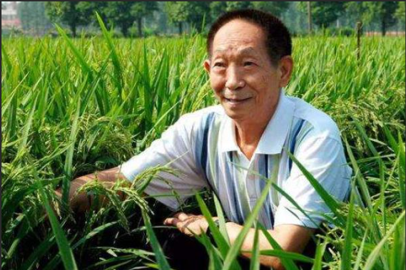
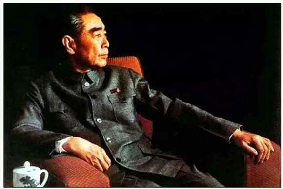
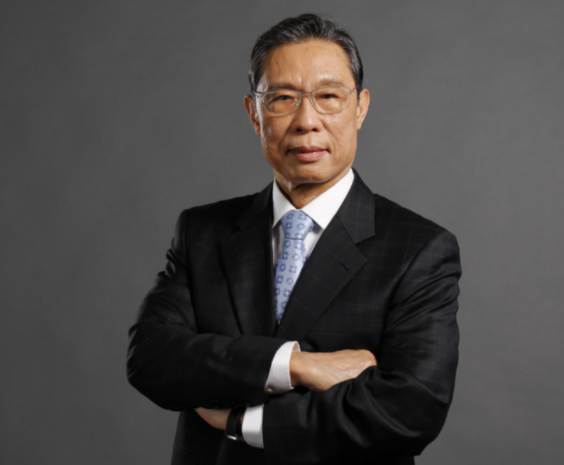
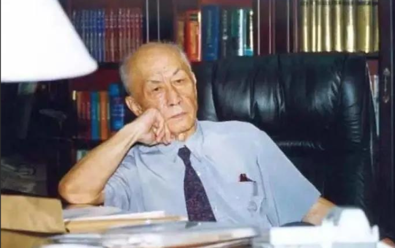

榜样人物介绍

袁隆平
身份：“杂交水稻之父”、中国工程院院士
简介：一生扎根稻田，用高产杂交稻让数亿人远离饥饿，常说 “每粒米都来之不易，要珍惜粮食”；他吃饭时会把碗里的米粒扒得干干净净，这份对粮食的敬畏，成为无数青年践行 “光盘” 的精神榜样。

周恩来
身份：新中国首任总理
简介：生活中始终保持艰苦朴素，吃饭时会把碗里的每一粒米都吃干净，甚至用馒头擦净盘底的汤汁；他常说 “任何浪费都是对人民的不负责任”，这份刻在日常里的节约自觉，是跨越时代的精神指引。

钟南山
身份：中国工程院院士、呼吸病学专家
简介：在公开活动的用餐场合，始终坚持 “吃多少盛多少”，吃完后餐盘干净得不用额外擦拭；他曾在采访中说 “节约不是小事，是每个人对资源的责任”，这份日常里的自律，让青年明白 “节约藏在每一个吃饭的瞬间”。

朱光亚
身份：“县委书记的榜样”
简介：搞科研时坚持 “物尽其用”：旧稿纸背面用来打草稿，铅笔用到握不住才换掉，连实验器材的包装绳都会收集起来重复使用；他说 “科研经费是国家的钱，每一分都要花在刀刃上”，这份务实的节约观，让青年明白 “节约与成就无关，是对资源的尊重”。

焦裕禄
身份：中学 “节约精神宣讲团” 成员
简介：在兰考治沙时，带头节约粮食：自己顿顿吃窝窝头配咸菜，把省下的粮食分给受灾群众；看到地里掉落的麦粒，会弯腰一颗颗捡起来，说 “这是老百姓的血汗，一粒都不能丢”，这份对粮食的珍视，是扎根大地的节约底色。